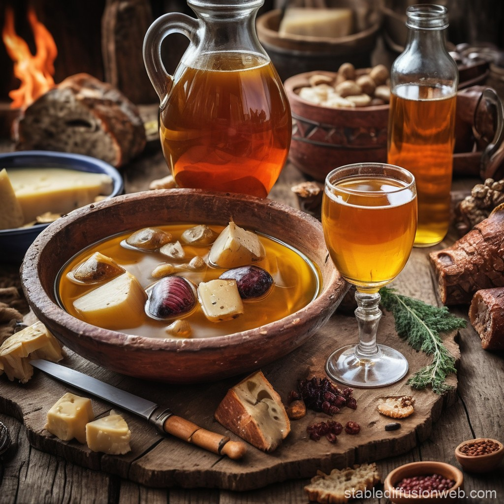

Mead

Description
Mead, a fermented honey drink, was Odin’s preferred drink according to many myths. The recipe below shows how to make a basic mead at home.
Ingredients
- 3 lbs honey
- 1 gallon of water
- 1 packet of wine yeast (or champagne yeast)
- A handful of raisins
- Spices (optional: cinnamon, cloves, or ginger)
Steps
- In a large pot, heat the water (don’t boil), and stir in the honey until fully dissolved.
- Once the mixture cools down to room temperature, pour it into a sanitized fermenting container.
- Add the yeast and raisins (they help fermentation) and any optional spices for flavor.
- Seal the container with an airlock and let it ferment for 3-4 weeks in a dark, cool place.
- After fermentation, siphon the mead into bottles and let it age for at least 6 months for the best flavor.